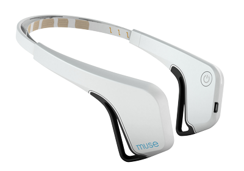
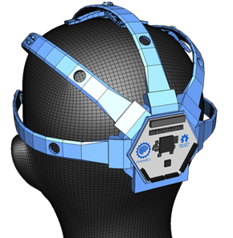
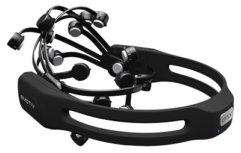
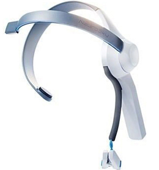

EEG
Muse

Muse is an EEG device which has developed as a meditation device. It has 4 channels, 1 reference and two ground electrodes.
Easy to wear
Works well for doing resting state experiments
Relatively cheap and has a 1 year warranty
Electrodes are not movable
Not all head sizes will fit
Difficult to do ERP experiments
OpenBCI

The OpenBCI is an open source eeg and can go to a maximum of 16 channels. It was originally a 2013 Kickstarter project, but has expanded the original concept to include an opensouce 3D printed cap and will launch a 4 channel board in 2017
256 Hz Sampling Rate
Modifiable to your own needs
Can use your own electrodes
Can add other inputs into the board
Open Source (Hardware schematics and Software)
Well Priced
Must print or get your own headset
Must get your own electrodes
Emotiv Epoc

The Emotiv Epoc is one of the first consumeer eeg devices which was released on the market. The popularity of the company surged in 2012 and 2013, which can be reflected by its sales and number of DIY projects
The Epoc a more stylish and easier to wear. It is also a popular device to use for EEG research as the cost is much better versus other research grade mobile EEG providers. However multiple people have complained that the provided electrodes are not very good
Good option for mobile eeg research
Multiple apps to go along with the headset if you are into controlling things with your mind.
More Pricey
The SDK is a little bit more clunky versus the alternatives and requires some technical experience
Some people have complained about the electrodes not being high quality or not getting good contact
Emotiv Insight

The Emoti Insight was the Section version of product with Emotiv brought the market. They positioned this product to be cheaper and a better option for people who don't want to spend too much money
Design is sleek
Easy to wear and use
Uses Dry Electrodes
The SDK is a little bit more clunky versus the alternatives and requires some technical experience
Neurosky Mindwave mobile

The Neurosky is one of the original consumer eeg's to go to the market. It's product is design primarily to be toy like in nature and only has 1 channel
Easy to wear and use
Available SDK
Uses Dry Electrodes
Can't move the electrode
The SDK is a little bit more clunky versus the alternatives and requires some technical experience
Features Comparison
Device |
Channels |
ADC Bits |
Sample Rate |
Motion sensors? |
LSL Support? |
SD Card Support? |
TTL |
Battery length |
Cost (US) as of Jan 2017 |
| Muse 2016 | 4-6 | 12 | 256 | 3 axis | Yes | No | Maybe | 5 hours | 200 |
| Epoc | 14 + 2 ref | 16 bit | 256 HZ | 9 axis | Possible | With accessory | N/A | 6 hours using BTLE | 799$ |
| Insight | 5+2 ref | 15 bit | 28 HZ | 9 axis | Possible | With accessory | N/A | 4 hours using Blutooth | 300 |
| OpenBCI | up to 16 channels | 24 | 250 HZ | 3 axis | Yes | Yes | Yes | about 26 hours | 500 for 8 channels 949 for 16 |
| Neurosky Mindwave | 1 +1 ref | 12 | 512Hz | N/A | N/A | N/A | N/A | 8 hours | 99.99 |
http://scienceforthemasses.org/2014/04/11/selecting-an-eeg-device/
https://www.emotiv.com/comparison/
https://en.wikipedia.org/wiki/Comparison_of_consumer_brain%E2%80%93computer_interfaces
http://developer.choosemuse.com/hardware-firmware/hardware-specifications